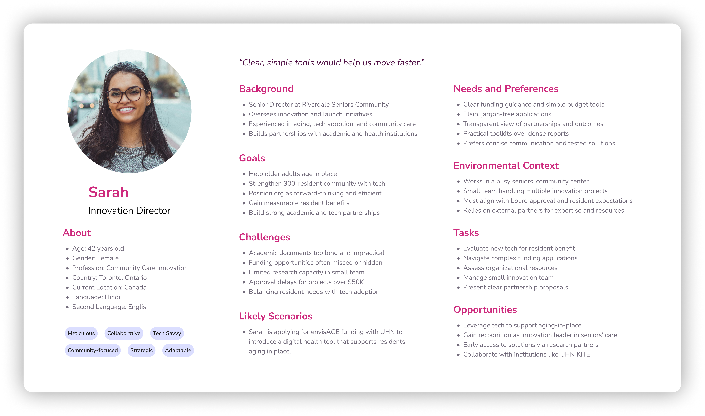
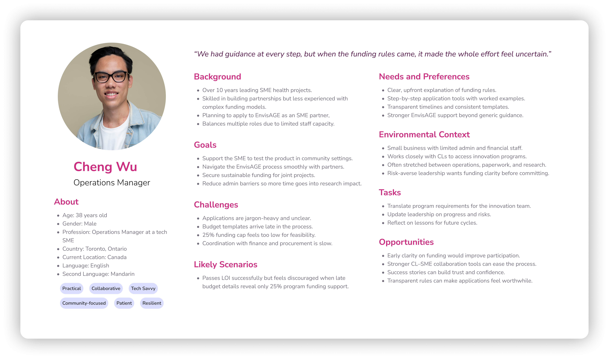
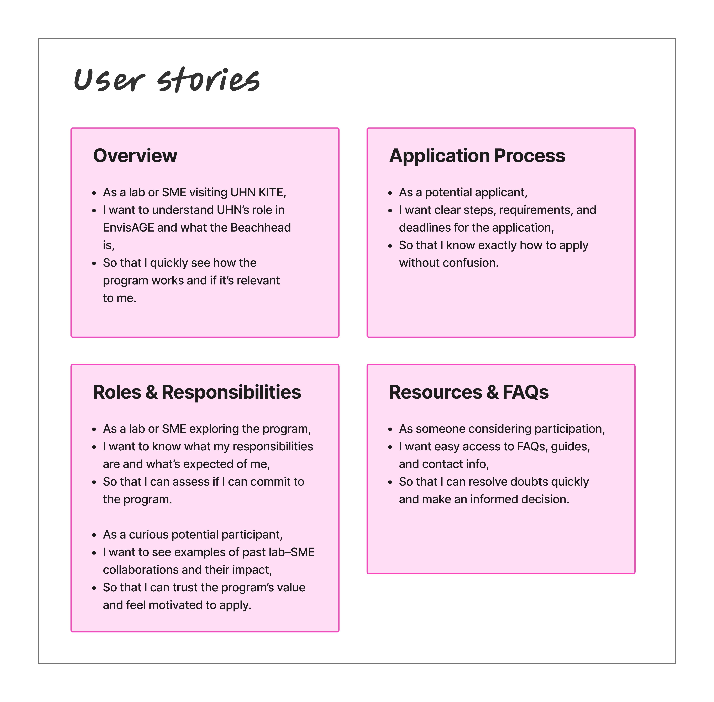

My Role
Research Lead
Stakeholder sessions, thematic analysis, insight synthesis
Design Lead
Information architecture, wireframes, microsite design
The Problem
The EnvisAGE program is a national $47M AgeTech initiative aimed at accelerating innovation for Canada’s aging population by connecting Small-to-Medium Enterprises (SMEs) with Community Labs (CLs).
However, UHN KITE, as a Beachhead partner, struggles to attract enough qualified applicants to meet its target of seven successful applications in three years.
Research Goal
What problems do Community Labs (CLs) and Small-to-Medium Enterprises (SMEs) encounter when navigating the EnvisAGE application, particularly around understanding roles, accessing clear information, and managing funding requirements across different application stages?
Research Approach
I focused on three areas where the breakdown was happening:
1
Where does the confusion begin?
People try to find program details and figure out process requirements, but the information is insufficient.
2
What affects the collaboration?
Between UHN, CLs, and SMEs, there is no clear mention of who is responsible for what tasks.
3
Why the number of applicants is less?
Potential applicants outside existing networks and conferences never know about the program.
To dive deeper into these issues, I conducted stakeholder input sessions with SMEs, CLs, and program administrators. I analyzed their experiences through thematic coding to find patterns in what breaks down.
Understanding the Users
Using the insights collected, I created personas and journey maps to understand who was struggling and where exactly they were getting stuck in the process.
These artifacts helped in mapping out the actual experience of the applicants. It highlighted what people actually go through when they try to apply.
Persona: Community Lab Director

Persona: SME Operations Manager

Journey Map: SME and CL combined

What I Found
1
Unclear Roles Across Ecosystem
There is broad confusion within Beachhead, CLs, and SMEs about who is responsible for what tasks. This makes planning of workloads and managing timelines difficult. It also creates inconsistent and unpredictable collaboration experiences.
2
Fragmented Information and Tools
Applicants deal with scattered documents, forms, and guidance that do not connect well. This makes the process feel confusing and heavy. People spend time asking for clarification instead of moving forward.
3
Unclear and Inconsistent Funding Rules
Funding details are not explained in a consistent or simple way. CLs and SMEs are unsure what costs are covered and when they will be reimbursed. Since funding affects decision-making, this uncertainty creates hesitation.
4
Low Program Visibility
Many people hear about the program only through conferences or word-of-mouth. There is little public presence that explains its value or impact. This limits who applies and keeps the program within small circles.
What I Learned
The issue wasn’t the program’s structure or its funding. It was a lack of clarity.
The system was broken because applicants couldn't tell who was responsible for what, what support they would receive, or how funding actually worked. Instead of reducing uncertainty, each interaction added more of it. The challenge wasn’t to redesign the program. It was to make the existing process clear, transparent, and understandable at every step.
The Solution
Project Lighthouse
A centralized information hub with a multichannel outreach strategy
Information about EnvisAGE is scattered across different sources like the EnvisAGE website, old PDFs, doubt-clearance sessions, and conversations. This adds extra effort for applicants and makes the process feel inconsistent and hard to follow. UHN KITE, as a newer Beachhead, also lacks a clear space explaining its specific role.
The solution is a microsite within UHN’s existing website that acts as a clear starting point for the partnership. It brings key information into one place, explains the structure, and guides applicants step by step instead of sending them across platforms. To make sure it reaches beyond conference circles, a focused marketing strategy supports the microsite through social media, email, and search visibility.
PART 1 : MICROSITE
EnvisAGE works with multiple Beachheads, but UHN KITE is relatively new to the program. There's no dedicated space that explains this partnership or what UHN specifically offers. Initially, the plan was to create a standalone website, but stakeholders already manage too many sites and wouldn't get approval for another one.
A microsite solves this. It sits within UHN's existing website and acts as a landing point for the EnvisAGE partnership. It explains the collaboration, clarifies the basic structure, and branches out to more detailed information. Instead of hunting across platforms, applicants have one clear starting point that connects them to everything they need.
Design Process
User Stories
Mapped out what different visitors need at each stage of their journey.

Wireframes
Low fidelity layouts to test information architecture and content hierarchy.

High Fidelity Design
Complete microsite design with branding, content, and interactions.
View Full Design in Figma
What's included:
- Clear explanation of Beachhead role and UHN KITE capabilities
- Step by step application process with timelines
- Role breakdowns for SMEs, Labs, and partners
- Success stories from completed partnerships
- FAQ addressing recurring concerns
PART 2 : MARKETING STRATEGY
The program needs to reach people outside the existing network. Right now, most SMEs and CLs only hear about EnvisAGE through conferences or referrals, which means a lot of qualified organizations never find out it exists.
To make people aware of the collaboration, a marketing strategy supports discoverability beyond closed networks. This makes the program visible and keeps communication consistent so the right organizations can actually find it.
Strategy Overview:
- Social Media:A 12-week LinkedIn and Twitter content plan aligned with the application cycle to build awareness, share program information, and drive traffic to the microsite.
- Email Marketing:A structured sequence of automated and manual emails that guide applicants through the process, clarify key questions, and reinforce deadlines.
- SEO Optimization:Technical setup of the microsite to improve search visibility, ensure accessibility, and make the program easier to discover organically.
What This Could Do
For Applicants
This microsite gives the applicants one clear place to understand everything about the program. Instead of piecing together information from different sources, they can quickly find accurate, up-to-date answers. That clarity reduces stress, builds trust, and makes it easier to move forward with confidence.
For UHN
It cuts down on repetitive emails and confusion by putting all key information in one organized space. It presents the program in a more professional and credible way, reinforcing its role as a trusted Beachhead partner. The team can also see what’s working and improve outreach strategically, rather than guessing
How to Measure Success
Microsite traffic and time on page
Application completion rates
Email open and click-through rates
Social media engagement and referrals
Number of qualified applications submitted
What I Couldn't Change
Structural Constraints
Because the collaboration was with UHN KITE and not EnvisAGE directly, the recommendations are limited to improving communication and user experience from UHN's point of view. It does not include altering the internal application process, funding structure, evaluation system, or any changes in the existing EnvisAGE structure.
Sample Limitation
The findings are based on a group of applicants who were already somewhat familiar with or involved in EnvisAGE, so the perspectives of completely new or unaware applicants may not be fully represented.
Qualitative Scope
The research relies on interviews and subjective feedback, which reveal recurring pain points but do not quantify how widespread or statistically significant those challenges are.
Program Evolution
As EnvisAGE continues to change and refine its processes, some identified issues may be temporary or specific to a particular program cycle.
Reflection
The core issue was not the intent of the program, but the way information was structured, communicated, and experienced by applicants.
The research showed repeated breakdowns in role clarity, funding communication, application guidance, and visibility. Applicants were not struggling with the idea of the program itself; they were struggling to understand responsibilities, reimbursement rules, timelines, and where UHN KITE fit within the larger EnvisAGE ecosystem.
This project demonstrates that even well-funded, well-intentioned programs can fail at the access stage. When roles, funding structures, and processes are not clearly articulated, participation becomes risky, inefficient, and limited to those already inside the network.